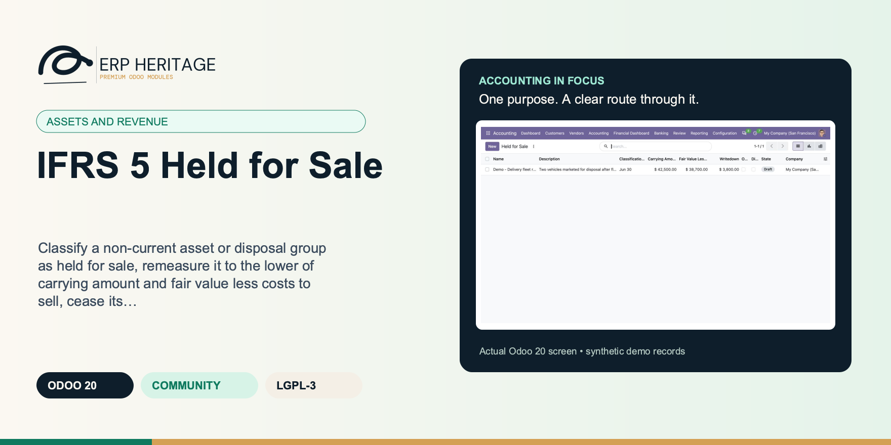
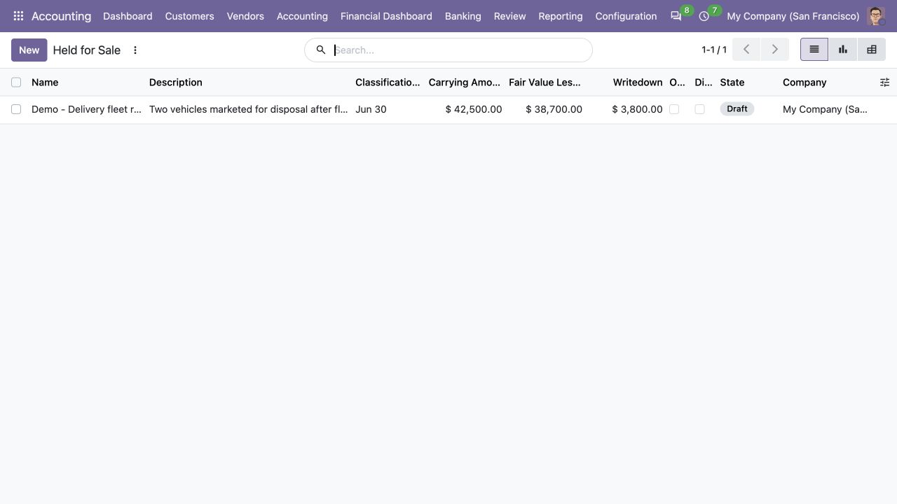
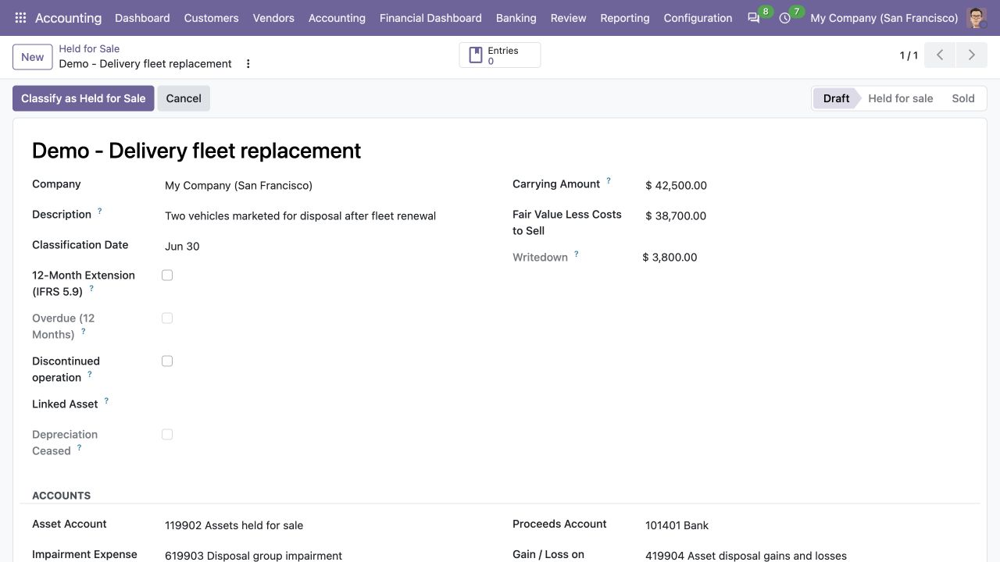
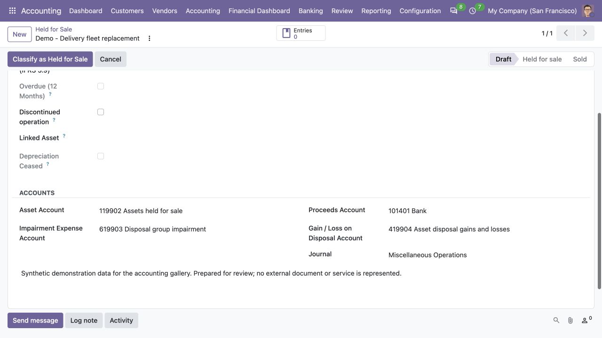
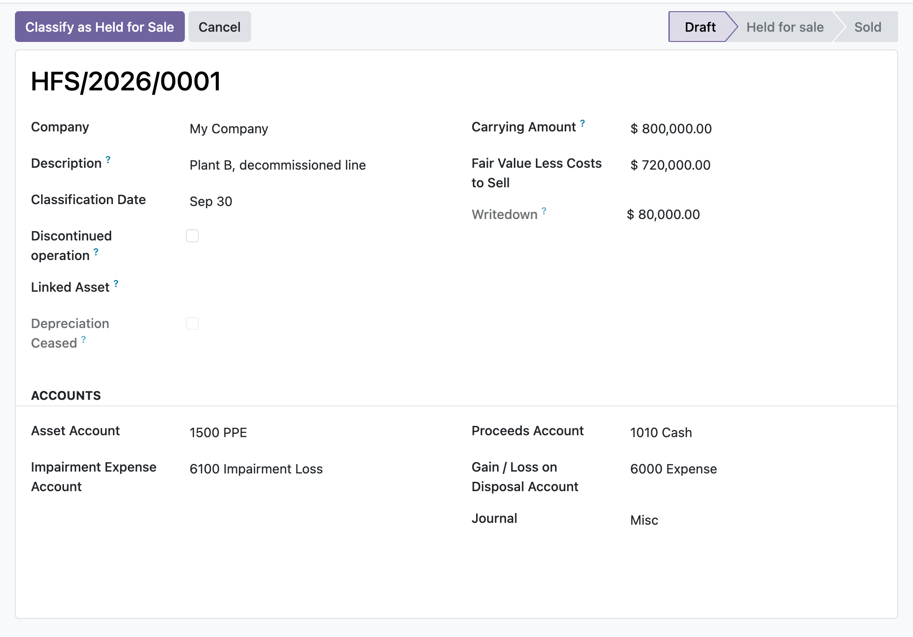

ERP HERITAGE / ODOO 20 COMMUNITY
Classify a non-current asset or disposal group as held for sale, remeasure it to the lower of carrying amount and fair value less costs to sell, cease its depreciation, and post the disposal gain or loss on sale, all inside Odoo 20 Community.
LGPL-3 · Odoo 20 · v20.0.2.1.2 · Module guide, setup, workflows and rollout checks
The purpose
This module implements IFRS 5 for non-current assets, disposal groups and discontinued operations in Odoo 20 Community. When a linked asset is classified, earned depreciation is posted through the exact classification date (including a mid-period stub), its carrying amount is seeded from the resulting ledger net book value, and depreciation is then paused (IFRS 5.25); ceasing classification rebuilds future depreciation prospectively from the resume date. The item is measured at the lower of carrying amount and fair value less costs to sell and any shortfall posts through the asset impairment engine. Disposal groups use member lines as the single group measurement record for assets, goodwill and directly associated liabilities. Write-downs follow the IFRS 5.23 order (goodwill first, then carrying-amount allocation over in-scope members subject to fair-value floors); reversals use current carrying-amount weights and remain capped by each non-goodwill member's cumulative write-down (IAS 36.122, IAS 36.124). Group sale allocates gross consideration, including transferred liabilities, consistently across linked assets and seals every disposal move to the group. Discontinued-operation reporting uses immutable exact journal-item scope plus automatically included remeasurement and disposal P&L evidence; the API exposes pre-tax and explicitly tax-adjusted post-tax results without claiming to build a financial-statement layout or mutating chart-account tags. Posting is gated to the EH Accounting Manager group and every entry is stamped for audit.
Inside Odoo 20
Captured from Odoo 20 Community using synthetic demonstration records. Configuration screens show the available workflow; external service connectivity still requires the relevant provider setup and validation.

Draft disposal review compares carrying amount, fair value less selling costs and calculated write-down.
Captured 2026-09-22 from isolated Odoo 20 Community database with synthetic demonstration records. No external submission or live banking activity is represented.

Draft fleet disposal assessment records classification date and valuation before held-for-sale recognition.
Captured 2026-09-22 from isolated Odoo 20 Community database with synthetic demonstration records. No external submission or live banking activity is represented.

Review asset, impairment, disposal and proceeds accounts before classifying the draft disposal group.
Captured 2026-09-22 from isolated Odoo 20 Community database with synthetic demonstration records. No external submission or live banking activity is represented.
Inside this module
On classification the item is remeasured to the lower of carrying amount and fair value less costs to sell, and the shortfall posts as a write-down (IFRS 5.15). A stored writedown field always shows the excess.
Classification sets Depreciation ceased, and when a fixed asset is linked it is paused through its own API so the depreciation cron skips it while held (IFRS 5.25). Cancellation resumes only an asset this record paused itself.
Recording a sale posts proceeds against the carrying amount and books the difference to the gain or loss account, then zeroes the carrying amount. The item can carry a discontinued-operation flag for separate presentation (IFRS 5.33).
A remeasurement upward reverses prior write-downs but is capped at the cumulative net debit posted to the impairment account for this item, so the carrying amount is never lifted above pre-classification value (IFRS 5.22). Excess is held at the ceiling, not posted.
When a fixed asset is linked, the carrying amount is taken from the asset's ledger net book value rather than a hand-keyed figure, the asset is paused, and write-downs route through the asset engine so the asset subledger and the held-for-sale carrying amount cannot diverge.
Once classified, the carrying amount is locked against hand edits; it can only change through the sanctioned Remeasure action. A raw attempt to reset a held or sold item back to draft is blocked unless a manager drives it through Cancel.
An asset already paused when classified is left untouched and not stamped, so a later cancellation does not wrongly reactivate an asset the user had deliberately paused itself.
A missing asset, impairment, proceeds, gain or loss account, a missing journal, or a sale of an unclassified item each raise an explicit message instead of posting a half-formed entry.
From input to outcome
Document the held-for-sale assessment and select the assets and liabilities that belong to the supported disposal group. Gather disposal group, classification date, carrying amount, fair value less costs to sell and linked asset records. Use a representative case with a known expected result so the team can separate configuration decisions from unexpected behaviour. Keep the supporting commercial or accounting evidence available during review.
Compute the lower-of measurement and inspect the related depreciation-stop and classification consequences. Follow the record’s available actions in the order intended by the workflow. Review the selected company, relevant dates and any validation messages before continuing. If the source data changes, reassess the result against the updated evidence.
A manager opens a held-for-sale record, links the store's fixed asset, and clicks Classify. The carrying amount is seeded from the asset's net book value, a write-down to fair value less costs to sell posts through the asset's impairment engine, and depreciation is paused. At the next reporting date a Remeasure records a further fall, or a partial reversal capped at the cumulative write-downs already booked. When the sale completes, Record Sale posts the proceeds, derecognises the asset and books the gain or loss, all under manager control and stamped to the audit trail.
Review subsequent changes and the eventual disposal entry, tracing sale proceeds and derecognised balances. Compare the outcome with the expected treatment for this case and record the reason for any difference that requires follow-up. Give exceptions an owner so they do not disappear inside a period-end spreadsheet.
Keep the plan-of-sale assessment and discontinued-operation presentation decision with the review evidence; classification requires business judgement. Include the accepted operating example, configuration choices and unresolved dependencies in the handover. Review them when business policy, source data or the surrounding Odoo applications change.
Product views
Product screenshots supplied with this module. Records and amounts are illustrative; appearance can vary with your configuration and release.

Held for sale, remeasured to fair value less costs
Business situations
IFRS 5 Held for Sale is relevant to controllers handling disposals and discontinued operations who need to answer this question: How should a qualifying asset or disposal group be measured and presented before its sale? Start with the process that creates the decision, identify its owner and agree what evidence the reviewer needs. A narrow pilot helps the team evaluate the supported workflow using its own accounting data before broadening access.
Use the module’s assets and revenue role as one part of a controlled close. Bring the relevant disposal group, classification date, carrying amount, fair value less costs to sell and linked asset records to the review, then explain the result alongside the business event it represents. Establish which outputs become part of the reporting pack and which outstanding matters need a separate accounting decision.
Turn the business question into an acceptance case: How should a qualifying asset or disposal group be measured and presented before its sale? Use one ordinary example and one relevant exception from the supported scope below. Ask the intended operator to prepare it and the reviewer to explain the result. Retain that accepted example with the deployment notes so future changes can be assessed against an understood process.
Before the first result
Confirm that the organisation needs the supported assets and revenue process described here. Identify the responsible controllers handling disposals and discontinued operations and write down the decision they expect the module to support. Use the limitations section to separate shipped behaviour from an integration, professional judgement or operational service that needs another owner.
Prepare disposal group, classification date, carrying amount, fair value less costs to sell and linked asset records. Check the relevant records in the intended company and use dates that match the business event. Resolve missing accounting configuration before evaluating calculated output; plausible-looking totals do not establish that the chosen inputs or policies are correct.
This module declares Accounting Suite Base, Fixed Assets and Leases as part of its installation foundation. Its direct standard-Odoo dependencies are account, mail. Review the actual dependency set in the target database before a rollout, especially where another addon also extends the same accounting models, menus or posting actions.
Define who operates IFRS 5 Held for Sale, who reviews unusual results and who maintains configuration. Run the representative workflow below in a test database using the intended users. Confirm that users can reach the work they own and that the reviewer understands the available evidence before moving the process into live operation.
Workflow reference
The core record with draft, held, sold and cancelled states, a computed and stored writedown, the classify, remeasure, sell and cancel actions, and a cumulative-write-down helper backing the IFRS 5.22 cap.
Optional Asset link (depends on Fixed Assets and Leases) that seeds the carrying amount from net book value, pauses the asset, and posts write-downs through Asset impairment / reversal so both subledgers reconcile.
Disposal and remeasurement moves are created on journal entry with an Held for Sale link and Eh sealed flag, and surfaced through the Entries stat button and journal-entries action.
security/ir.model.access.csv grants read to users and auditors and write or unlink to managers, security/eh isolation rules.xml enforces per-company record isolation, and posting actions check the EH Accounting Manager group.
data/sequences.xml supplies the Asset held for sale (IFRS 5) reference sequence, with list and form views and a menu entry for the register.
Sealed IFRS 5.38 entry that moved every linked member's gross cost and accumulated contras out of PPE and presented each net carrying amount in the disposal group's held-for-sale account.
The sale has not completed within one year of classification because of events or circumstances beyond the entity's control, and the entity remains committed to its plan to sell. Setting this suppresses the overdue flag; the group is never auto-declassified (disclose-first design).
The group has been held for sale for more than twelve months without the IFRS 5.9 extension. Flag only: review whether the held-for-sale criteria are still met and either record the extension or cease classification.
Scopes the operation for the module's IFRS 5.33 reporting API. Seal exact posted P&L journal items; the module does not build or modify a financial-statement layout.
Per-company audit marker proving that an exact journal-item scope was sealed. It is not attached to chart accounts and does not imply a financial-statements integration.
Server-owned account summary derived from the exact approved journal items. Journal-item identity, not account metadata, is the authoritative reporting scope.
Aggregate carrying amount of the group: asset members less directly associated liability members. Derived from the member lines; asset-linked lines are seeded from the asset's net book value on classification.
Fair value less costs to sell of the disposal group as a whole (IFRS 5.15 measures the group, not its members).
Net write-down currently recognised across the member lines (including goodwill). Reversals are capped at the non-goodwill portion (IFRS 5.22, IAS 36.124).
Fixed asset this member covers. On classification the carrying amount is seeded from the asset's net book value, the asset is paused so depreciation ceases (IFRS 5.25), and any allocated write-down is recorded on the asset's own impairment subledger so the two stay reconciled (IFRS 5.15). Leave blank for a free carrying entry.
A liability directly associated with the assets of the group, transferred in the same transaction (IFRS 5 Appendix A). Enter the liability's carrying amount as a positive number; it reduces the group carrying amount and never receives any write-down allocation.
Goodwill member: an IFRS 5.23 write-down is applied first to goodwill (IAS 36.104) and a goodwill write-down is never reversed (IAS 36.124).
Member is inside the IFRS 5 measurement scope and absorbs its pro-rata share of a group write-down. Untick for members measured under their own standard (financial assets, inventories at net realisable value, deferred tax assets, IFRS 5.5): they stay in the group's carrying amount but receive no allocation.
Member carrying amount (always entered positive; liability members reduce the group total). Asset-linked lines are re-seeded from the asset's ledger net book value on classification.
Explicit attestation that both IFRS 5.27 member amounts were measured. Zero is valid only when this evidence flag is set.
Optional floor: the member is never written below the higher of this amount and zero (IAS 36.105, applied by IFRS 5.23). Any blocked excess re-prorates over the remaining scope members. Leave at zero for no floor beyond zero itself.
Balance-sheet account carrying this member (the write-down credit leg for assets; the derecognition leg on sale). Falls back to the group's fallback asset account.
The sale has not completed within one year of classification because of events or circumstances beyond the entity's control, and the entity remains committed to its plan to sell. Setting this suppresses the overdue flag; the item is never auto-declassified (disclose-first design).
The item has been held for sale for more than twelve months without the IFRS 5.9 extension. Flag only: review whether the held-for-sale criteria are still met and either record the extension or cease classification.
Scopes the operation for the module's IFRS 5.33 reporting API. Select exact posted P&L journal items and seal the scope; the module does not build or modify a financial-statement layout.
Server-owned snapshot of the accounts approved when Tag Discontinued P&L ran. Reporting reads this immutable scope, not mutable account-tag membership.
Exact posted P&L journal items belonging to this discontinued operation. Account-wide tagging cannot distinguish continuing activity that shares an account, so reporting never infers scope from the selected accounts.
Upgrade-only audit note preserving the former loose disposal-group reference. New group measurements are represented only by Disposal group member (IFRS 5), which is the single carrying record.
Fixed asset this classification covers. On classification the carrying amount is seeded from the asset's net book value and the asset's depreciation is paused so it is not charged twice (IFRS 5.15, 5.25). Leave blank for a standalone, hand-keyed item.
Set when this classification paused the linked asset, so a reversal or cancellation only resumes an asset it paused itself (not one the user had already paused).
Sealed IFRS 5.38 entry that moved the linked asset's gross cost, accumulated depreciation and accumulated impairment out of PPE and presented its net carrying amount as held for sale.
IFRS 5.27(a) carrying amount before classification adjusted for depreciation, amortisation or revaluation that would have been recognised had the asset never been classified held for sale.
Explicit manager attestation that both IFRS 5.27 amounts were measured. Required because zero is a valid measured amount and cannot otherwise be distinguished from an omitted input.
Illustrative implementation exercise. A group plans to sell a qualifying asset or disposal group. Record the classification date and supported membership, then compare the entered carrying amount with fair value less costs to sell. Inspect the lower-of result and the link to any supported depreciation stop. Classification is a decision based on the disposal facts, not merely a convenient way to stop expense. Review a later valuation change and the final disposal path using the same evidence chain. Reconcile the proceeds, balances removed and resulting gain or loss. Keep the assessment of discontinued-operation presentation separate and documented, since a planned sale does not automatically establish that every related amount belongs in that presentation category.
Questions before rollout
It is designed for controllers handling disposals and discontinued operations. Its central business question is: How should a qualifying asset or disposal group be measured and presented before its sale? The listing describes the shipped operating scope and the decisions that remain with the organisation. Evaluate it against your own records and review process, rather than treating the module name as a promise to cover every scenario in that accounting area.
Have disposal group, classification date, carrying amount, fair value less costs to sell and linked asset records ready, together with the person who owns the related accounting policy. Document the held-for-sale assessment and select the assets and liabilities that belong to the supported disposal group. A known example makes it possible to check the result and resolve configuration questions before the process is repeated across more records or companies.
Review subsequent changes and the eventual disposal entry, tracing sale proceeds and derecognised balances. Keep the relevant source evidence with the output and be explicit about company, date and policy choices. The most useful review asks whether the result follows from the business inputs, not only whether the operation completed without a validation message.
It belongs to the assets and revenue family. Its declared custom dependency foundation is Accounting Suite Base, Fixed Assets and Leases. Installing the complete suite also brings other operating and specialist modules; using this focused module should be evaluated against its own dependency list and scope. Optional services still need their own configuration and agreement where applicable.
It does not automate the twelve-month completion, active-marketing or highly-probable-sale assessment; you decide when an item qualifies for classification and click Classify. Keep the plan-of-sale assessment and discontinued-operation presentation decision with the review evidence; classification requires business judgement.
No. IFRS 5 Held for Sale provides the specific records, calculations or workflow described in this listing. The organisation remains responsible for its source information, accounting choices, supporting evidence and review. Where the process uses an estimate, a contract assessment or an external service, appoint the appropriate owner before relying on the output.
Scope and requirements
It does not automate the twelve-month completion, active-marketing or highly-probable-sale assessment; you decide when an item qualifies for classification and click Classify.
It does not build the face of the statement of comprehensive income or the discontinued-operations note. Its reporting API returns exact-scope pre-tax and explicitly tax-adjusted post-tax values for your reporting layer.
Disposal-group write-downs are allocated to asset members, never liabilities: goodwill first, then current carrying-amount weights subject to member fair-value floors and scope exclusions. Reversals use current carrying weights and individual cumulative caps.
It has no foreign-currency translation, deferred-tax or minority-interest automation for the disposal; measured tax effects are supplied explicitly to the post-tax reporting API.
It requires the EH Accounting base and fixed-asset modules (Accounting Suite Base, Fixed Assets and Leases); it is not a standalone add-on to plain Odoo accounting.
Standards references describe the accounting subject addressed by the module. They do not establish certification, statutory filing acceptance or suitability for every jurisdiction. Your finance team owns its assumptions, accounting policies and review.
Installation scope
Odoo installs the following direct dependencies automatically. Additional dependencies can be brought in by those modules. Related modules in the wider catalogue are optional unless they appear in this dependency chain.
Shared reporting engine for the ERP Heritage Odoo 20 Community accounting suite, providing a reproducible report-execution audit log and a move-version result cache. Append-only audit log of every report render with user, timestamp, the full options snapshot, runtime, and a SHA-256 result hash for XLSX and PDF output, plus a multi-company analytic-aware parameterised SQL builder with no raw user input in SQL, a three-tier User/Manager/read-only Auditor privilege model, and a currency-aware XLSX writer. Odoo 20 Community accounting reporting engine, reproducible financial report audit trail, move-version report cache invalidation, multi-company parameterised SQL builder, append-only audit log, read-only auditor role, SHA-256 report hash compliance, currency-aware XLSX export, analytic-aware journal item aggregation.
Included dependency: eh_account_base. The shared reporting engine under the ERP Heritage accounting modules: an append-only render audit log, precise per-company cache invalidation, and a whitelist-only parameterised SQL builder.
Fixed asset register and IFRS 16 lease accounting for Odoo 20 Community with real persisted depreciation schedules and journal posting. Odoo Community asset depreciation, four depreciation methods (straight line, reducing balance, AU prime cost, AU diminishing value) plus manual, IAS 36 impairment with reversal cap, right of use asset and lease liability amortisation, lease modification and termination, asset disposal gain loss, deferred revenue and deferred expense recognition, asset under construction CIP, Australian low-value pool, multi-book tax and statutory reporting schedules. No Enterprise modules required.
Included dependency: eh_account_assets_pro. A standards-grade fixed asset register and IFRS 16 lessee engine for Odoo Community, with real persisted schedules and journal posting.
Odoo Community dependency required by this module. Its own dependencies and configuration remain part of the installation scope.
Odoo Community dependency required by this module. Its own dependencies and configuration remain part of the installation scope.
Acceptance guide
The following are recommended rollout checks, not claims of additional built-in features. Apply the checks relevant to this module and retain evidence of your own results.
Select a recent, closed period that your finance team understands well. Keep its approved source documents, ledger totals and existing working papers available. Reproduce that period in a staging database before working on current transactions. A familiar period makes differences visible: you can distinguish an opening balance problem from a configuration choice, a timing difference or a genuine defect. Agree which person owns each discrepancy and what evidence will close it. Successful installation is the starting point; a repeatable business outcome is the acceptance criterion.
Write down the output your team needs from this module: a reviewed transaction, an exported file, a reconciled balance, an approved schedule or an operational queue. Identify who prepares it, who reviews it and who relies on it next. Make the scope concrete with one company, one reporting period and a small representative document set. Include an ordinary case and an exception. This keeps the evaluation focused on the business decision instead of the number of available screens, and gives reviewers a consistent way to compare the new workflow with their current process.
Use the Odoo 20 edition of the module and its dependencies together. The manifest defines what Odoo installs automatically; a feature mentioned elsewhere in the wider product family is not automatically included. Review the dependency guide on this page before enabling the complete suite, especially where your deployment also uses Sales, Purchase, Inventory or website components. Confirm that your hosting arrangement accepts custom server modules and their Python requirements. Keep a copy of the installed module versions with your acceptance record so a later update can be checked against the same baseline.
Check the companies, currencies, fiscal periods, journals, accounts and partner records used by your sample. Confirm that account purposes agree with your chart of accounts and that archived records are not being selected inadvertently. Review company-specific settings while the intended company is active. Where a workflow needs bank details, analytic dimensions, product information or payment terms, validate those inputs with their owner. Clean master data reduces repeated exceptions and makes it easier to investigate the exceptions that remain. Keep the preparation list short enough for someone else to repeat it.
Decide which source establishes the opening position before introducing new transactions. Save the source date, company, currency and supporting reconciliation. If a module maintains a schedule or a working-paper balance alongside the ledger, document how that opening amount should tie to the general ledger. Do not use balancing entries to hide a difference during the pilot. Classify the difference, correct its source and rerun the comparison. The resulting trail is useful both for your internal reviewer and for support if an unexpected calculation needs investigation.
Choose named users for preparation, review and administration. Confirm their practical access by signing in as those users in staging, rather than relying on an administrator's view of the menus. A visible menu does not replace model access or record restrictions, and a hidden menu does not by itself prove that data is protected. For your own acceptance check, verify the specific business operations each role needs. If your organization requires separation of duties, include that policy in the rollout criteria and check the actual workflow against it before granting production access.
Run the sample with the intended company selected, then repeat the relevant navigation and search checks as a user assigned to a different company. Record which company owns each source document and each generated result. For users who work across entities, confirm how their allowed-company selection affects totals and available records. Investigate any cross-company difference before it becomes a month-end problem. Group-level work and company-level work have different scopes; use the appropriate module and document the scope on the review evidence instead of assuming one screen represents both.
Include a company-currency case and, where relevant to the module, a foreign-currency case. Check the date used to select exchange rates and keep the rate source available to the reviewer. Add a transaction near a period boundary so the team can see whether document date, accounting date or another business date drives the result. Test decimal precision with a small amount as well as a large one. Record the expected rounding treatment. These checks turn vague differences in totals into questions that can be resolved against your accounting policy.
Choose one result and follow the available links or record references back to the original business document. Compare its company, partner, amount, currency and dates with the expected source. Where the workflow creates a journal entry, inspect the accounts and balancing lines before relying on an aggregate report. Where it exports a file, compare the file's records with the selected batch. Save a small, intelligible evidence set instead of an indiscriminate screenshot archive. A reviewer should be able to explain what happened without needing the original preparer beside them.
If this module creates or updates accounting entries, separate preparation from the decision to post in your operating procedure. Inspect the proposed outcome, resolve missing configuration and confirm the intended period before using a posting action. If the module does not post entries, identify the equivalent commitment point, such as sending a file or approving a review record. Record who is allowed to make that decision. The page describes the module's supported workflow; your team still needs an operating policy that fits its accounting responsibilities and approval structure.
From pilot to production
Use a deliberately incomplete sample in staging: a missing required setting, an unsuitable date or a source document that is not ready for the next step. Observe the actual message and the record state that remains. Correct the input and repeat the operation. Check that the recovered result agrees with the ordinary successful case. For transactions already committed, use the supported correction or reversal workflow rather than editing database records. Your acceptance record should explain how staff recover from mistakes, because that is part of day-to-day usability, not an unusual administrative task.
Repeat an import, calculation, preparation step or button action only where the documented workflow permits it. Confirm whether the expected behavior is a recalculation, a refusal, a new version or reuse of an existing record. Do not infer universal duplicate prevention from one successful test. Record the behavior of the actual operation your team will use and include it in staff guidance. A small, identifiable sample makes duplicate records easy to spot and avoids creating a misleading acceptance result from a large batch with poorly understood contents.
Where accounting dates are involved, inspect your company's lock settings and the role that can change them. Include one sample dated inside a closed period and one in the open period, then observe the supported behavior with normal finance access. Agree how the team will handle late documents and approved corrections. The goal is a clear route for legitimate work that preserves the reason the period was closed. Record the policy alongside the module's workflow so operators know when to stop and involve the person responsible for the close.
If the module produces reports or exchange files, have the intended recipient inspect a sample. For a finance report, check the filters, company, dates, currency, labels and totals. For a bank or service file, use that recipient's own validation or test process before a production submission. Generating a structurally valid file does not establish acceptance by every provider. Keep the exact sample and any recipient feedback with the rollout record. Where no export is provided, agree which supported screen or linked record serves as the handover evidence.
Identify any step that depends on a separately configured provider, connector, credential or commercial service. Confirm the exact adapter and its requirements before scheduling a live demonstration. Some family modules provide deterministic rules or file preparation without a live external connection; their usefulness should be evaluated on that basis. Test a provider failure in staging only when the adapter offers a safe test route. Make it clear who manages credentials and provider subscriptions, and who should be contacted when an external service is unavailable.
Time the operations your staff will actually repeat, using a dataset that resembles your expected company, date range and document volume. Record the environment and sample size beside the timings. Include navigation, filtering, preparation and review rather than quoting a single best-case page load. This page makes no universal performance promise: network latency, database size, customizations and infrastructure affect results. Use measurements to choose a practical rollout batch size and to identify any operation that needs investigation before more users join the workflow.
Give staff a short exercise that begins with a business situation and ends with a reviewed result. Include the expected amount or state, the navigation route, the point at which a reviewer becomes involved and the supported correction route. Let operators explain why their result is correct. Add only the settings and exceptions relevant to their role. A concise internal playbook built from your own pilot is easier to maintain than a large collection of unannotated screenshots, and it helps new users understand the relationship between this module and the rest of Accounting.
Capture the module version, Odoo version, affected company, operation, exact message and a minimal sequence of steps. Use redacted sample documents when sharing evidence outside your organization. State the expected result and the actual result separately. Include the date filters and role used, because the same record can look different with another scope or set of permissions. Never include passwords, API tokens or private keys in a support message. Good reproduction details allow the problem to be investigated without guessing at your business setup or asking staff to repeat a full close.
Before deploying an update, back up the database and filestore together, and restore that backup into an isolated environment. Apply the module update there, then repeat the key pilot scenarios using the saved acceptance record. Check that existing documents remain readable and that the expected actions and menus still lead to the right workflow. Include one newly created record as well as an older one. Keep a rollback plan appropriate to your deployment and confirm that the backup can be restored before scheduling the production change.
Agree the release criteria before the pilot ends: expected financial results, access boundaries, supported corrections, output acceptance and owner sign-off. List unresolved items with their business impact instead of treating every observation as a blocker or dismissing it as cosmetic. Start production with a manageable scope and a named reviewer. Keep the first cycle's evidence so that later enhancements can be assessed against a concrete baseline. App-store descriptions help you select and understand the module; acceptance in your own configuration establishes whether the workflow is ready for your team.
Connected capabilities
These related modules explain how this workflow connects to the wider accounting process. Only the dependencies declared above are installed automatically. Choose optional additions for a specific business need.
A first class fixed asset register and IFRS 16 lessee accounting engine for Odoo 20 Community. No paid Enterprise modules required. Every schedule is a real persisted record, one line per period with computed depreciation, accumulated balance and net book value, queryable and exportable for audit.
The shared engine that powers the ERP Heritage accounting modules for Odoo 20 Community. It auto-installs as a dependency of any ERP Heritage accounting module, so you do not need to install it by hand.
This module capitalises the borrowing costs directly attributable to the acquisition, construction or production of a qualifying asset under IAS 23. For each period it takes the borrowing costs on funds borrowed specifically for the asset, deducts the income earned on the temporary investment of those funds, and adds the borrowing costs on general borrowings by applying the capitalisation rate to the expenditure on the asset. The amount capitalised is capped at the borrowing costs actually incurred in the period, and capitalising posts a single balanced journal entry that reclassifies the amount from the interest expense account to the qualifying asset account. Dated expenditure lines, commencement and cessation dates, and suspension spans are all optional and only refine the base when you use them.
IAS 20 Government Grants records monetary and non-monetary awards with their grantor, agreement reference and source attachments. Deferred-income grants are released manually on explicit earning-period dates; the module does not generate an amortisation schedule. A deduction-from-asset grant credits the selected asset account in full on receipt, but this module does not create a fixed-asset record or recalculate depreciation. Non-monetary awards use the received asset's fair value, and repayment derecognises that received asset instead of assuming a cash settlement. Condition breaches accrue on an operator-selected event date, first reversing unamortised deferred income and charging any excess to profit or loss. Accrued clawbacks may then be settled in full or in controlled partial amounts on explicit settlement dates. Posting remains manager-only, sealed and linked to the grant and grantor; measurement, agreement and condition evidence freezes once recognition begins.
This module runs the IAS 2 measurement rule that inventories are carried at the lower of cost and net realisable value (IAS 2.9). A period-end run holds one line per inventory item or group, each with its cost and its net realisable value, the estimated selling price less the costs to complete and sell (IAS 2.6). Each run carries an explicit, audited assessment basis (IAS 2.29): on the default item-by-item basis the write-down is the excess of cost over NRV floored at zero per line; on the category basis similar or related items sharing a product category are assessed as one unit, so surpluses and deficits within the category are netted before the floor at zero is applied. The category is therefore never carried above its aggregate cost, and the netted requirement is allocated only over the lines with an item-level deficit (pro-rata by deficit), so no individual item is ever written up above its own cost or down below its own NRV. The basis is tracked in the chatter, locked once the run is posted, and disclosed on the posted movement entry. The run compares the closing position to the opening write-down and posts only the movement. An increase debits an inventory write-down expense and credits a write-down allowance; a recovery reverses the write-down but only up to the amount previously recognised, so inventory never rises above cost (IAS 2.33). Posting and reversal are gated to the EH Accounting Manager group, entries are sealed, and posted runs are frozen against silent edits (IAS 2.34).
This module records property held to earn rentals or for capital appreciation under IAS 40. On recognition the property is measured at cost, and the entity chooses either the fair value model or the cost model as its policy. Under the fair value model each remeasurement to fair value posts a balanced entry and recognises the change in profit or loss, then rolls the carrying amount forward to the new fair value. Transfers follow the standard faithfully: a fair value model property leaving investment property is remeasured to the fair value at the date of change in use, with the gap recognised in profit or loss before derecognition and that fair value carried out as the deemed cost of the destination; a cost model property transfers at its unchanged carrying amount per IAS 40.59, with the fair value at the transfer date stored for disclosure; and an owner occupied fixed asset from the ERP Heritage assets module can be transferred in at fair value, with an uplift credited to the equity revaluation surplus and a deficit charged to profit or loss after first consuming any surplus on that asset, per IAS 40.61 and 62. Every transfer writes an immutable audit trail row recording the basis, the carrying amount before, the fair value at the transfer date, the delta posted with its routing, and the journal entries. Under the cost model the module posts straight line depreciation charges, halts depreciation cleanly when the basis switches to fair value, and it also handles full derecognition on disposal, with the gain or loss falling out as the balancing figure. Every posting is gated to the EH Accounting Manager group, stamped for audit, and refuses to run when an account, journal, state, or change is missing rather than failing silently.
This module implements the IFRS 15 five-step model on real journal entries. A revenue contract holds one or more performance obligations, each with a standalone selling price, and the transaction price is allocated across them in proportion to those prices (IFRS 15.74). Each obligation is satisfied at a point in time or over time under a documented measurement method (IFRS 15.35-45, B14-B19): output milestones or units delivered, or input costs incurred or time elapsed, with the cost and unit drivers computing the percentage complete automatically and a mandatory basis note recording why the method depicts the transfer of control. Recognising posts the incremental amount since the last run, crediting revenue and clearing first any contract liability then the contract asset (IFRS 15.105-107). Billing debits the receivable and credits first the contract asset then the contract liability, so the balance sheet always shows the correct net contract position. It also handles variable consideration with the constraint and its period-end reassessment workflow with a frozen audit trail (IFRS 15.50-59, 15.56), specifically allocated discounts (IFRS 15.81-83), a significant financing component with advance and arrears interest that is re-measured on catch-up modifications (IFRS 15.60-65), separate, prospective and cumulative catch-up contract modifications (IFRS 15.18-21), and contract closure validation that blocks closing while obligations remain unsatisfied unless a manager releases the remainder to profit or loss or a refund liability with a recorded reason. Every posting is balanced by construction and gated to the EH Accounting Manager group.
When both modules are installed this auto installs and adds an optional revenue contract link on the recurring invoice template. A linked template routes every generated invoice line to the contract's contract liability account instead of the line's income account, so recurring billing lands as deferred revenue on the balance sheet rather than immediate income.
ERP Heritage
Start with the workflow, setup and acceptance guide above. For implementation or support, share your Odoo version, module version, business scenario and a redacted example. Keep credentials and personal data out of support messages.
Published by ERP Heritage. Odoo is a trademark of Odoo S.A.; this independently developed application is not an Odoo S.A. product or endorsement.
Package: eh_account_held_for_sale · Release: v20.0.2.1.2 · License: LGPL-3.